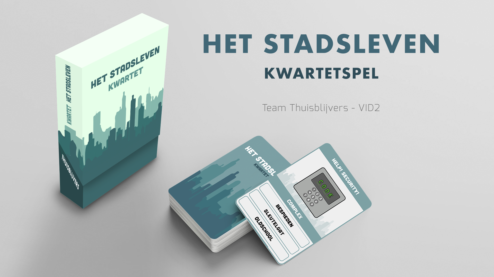
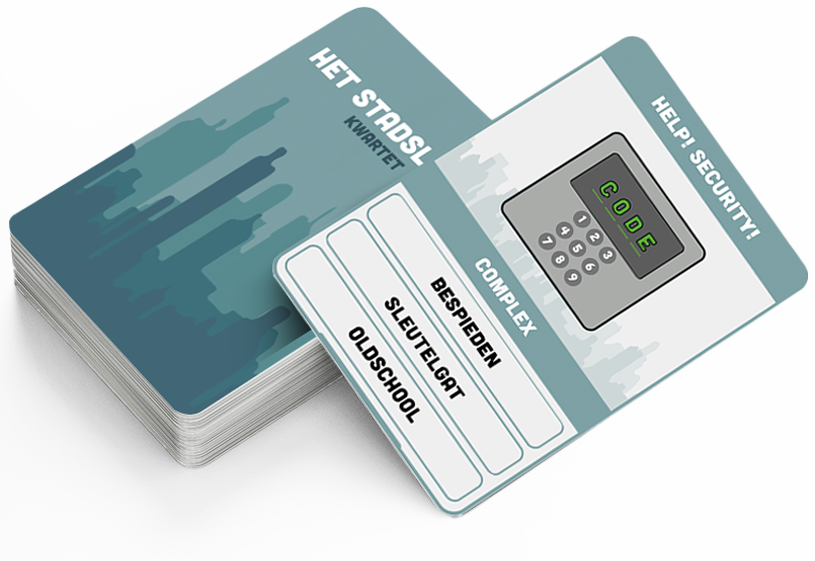
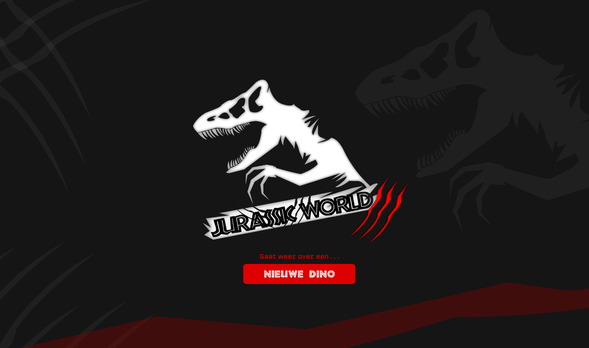

Ontwerpen en Leerdoel
Na elk blok was er een extra opdracht, genaamd Ontwerpen 1,2 en 3. En tussen de minor was er een opdracht om een eigen leerdoel te maken. Mijn leerdoel was mezelf te verdiepen in het maken van een applicatie.

Ontwerpen 01 - Kwartet spel
Het maken van een kwartetspel in een groep van 8 studenten. Het kwartetspel was gericht op het stadleven en omgeving van Amsterdam.
Afgerond met een 6.0
 
Ontwerpen 02 - Pecha Kucha
Een opdracht om een Pecha Kucha te presenteren. Bij deze Pecha Kucha kozen we in een groep van 3 voor een ontwerper die het uiterlijk van de Apple machines heeft ontworpen, genaamd Jonathan Ive.
Afgerond met een 6.0
Ontwerpen 03 - Jurassic World 3
Een project naar keuze. Het derde deel van de Jurassic World film te maken omdat ik mezelf wilde uitdagen. De focus was om een nieuwe innovatieve dinosaurus te ontwikkelen.
Afgerond met een 7.0
Leerdoel - Dark Mode Snapchat
Eigen opdracht om een Dark Mode versie te maken voor de internationale Snapchat applicatie. Mijn leerdoel was om mijn perspectief te verbreden en daarbij was de focus op applicatie van belang omdat de smartphone tegenwoordig een tweede leven is van de mens.